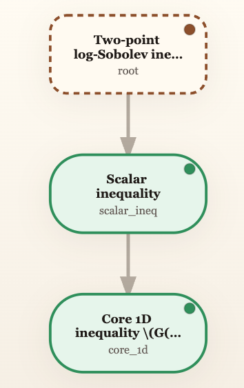
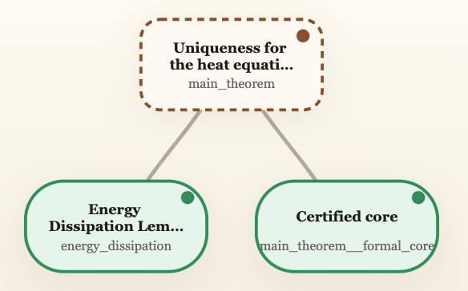
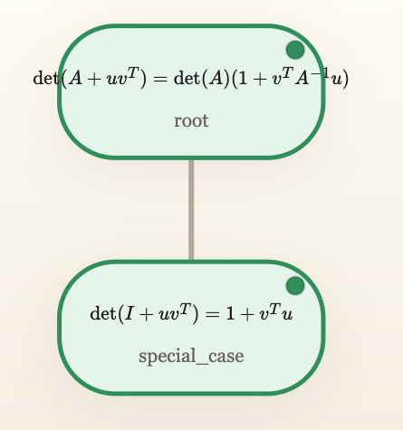
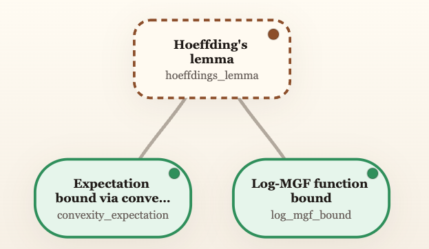

Given a theorem statement and an informal proof, Formal Islands produces a proof graph with Lean-verified nodes plus a report that shows which parts are certified and which parts still need human review.

Current AI-for-math systems face a bottleneck from two directions:
Strong informal systems (language models doing natural-language mathematical reasoning) can handle broad, flexible proof search. But they can also drift semantically, prove the wrong thing, or produce arguments whose correctness is hard for humans to audit. As these systems improve, the proofs they produce will get longer and harder to check, not easier.
Fully formal systems that use Lean give much stronger guarantees, but in many domains (e.g., PDEs, geometric measure theory, spectral theory), you often can't even state the intended theorem in Lean yet, let alone prove it. This caps what fully formal AI theorem-proving can achieve today.
Formal Islands is a near-term compromise: let an informal system handle the broad reasoning, then identify the local claims that really are within current Lean coverage and certify those. Most of the proof stays informal, but important nodes inside it are genuinely machine-checked.
A planning backend LLM reads the theorem and informal proof, then builds a compact proof graph.
The system ranks candidate nodes by how concrete and Lean-formalizable they are.
An agentic Lean worker writes and repairs proofs for the chosen nodes (autoformalizer of your choice).
The pipeline produces an HTML report with verified nodes, logs, and the remaining proof burden (human review checklist).
Each of these reports was produced entirely by this system. Given only the theorem statement and an informal proof as input, the pipeline planned the proof graph, selected candidates, ran Lean verification, and generated the report automatically. Green nodes are formally verified in Lean.



Install the package and its dependencies:
git clone https://github.com/aditya-ramabadran/formal-islands.git
cd formal-islands
python3 -m venv .venv
.venv/bin/python -m pip install -e '.[dev]'You'll also need a local Lean/Mathlib workspace (see the full setup guide) and at least one backend LLM. For planning: Claude Code, Gemini, or Codex. For formalization: Aristotle (recommended), or any of those same CLI backends used as an autonomous agentic Lean worker.
Run the pipeline interactively on your own theorem:
formal-islands new --backends claude/aristotleOr run against a featured example:
formal-islands run two_point_log_sobolev --backends claude/aristotle --max-attempts 4The output directory, workspace path, and most options are inferred automatically. See the README for the full flag reference.